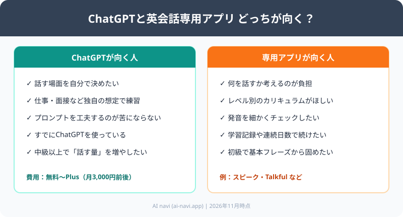

英会話は「話した量」がものを言う分野です。人を相手にすると緊張して言葉が出ない人ほど、まずAI相手に口を動かす習慣を作るところから始めるのがいいと思います。
ChatGPTで英会話の練習はできる？向いている使い方
結論から言うと、ChatGPTは英会話の練習相手として十分に使えます。音声モードではChatGPTの返事が声で返ってきて、内容は文字でも追えます。話しかけるタイミングを気にせず、言い間違えても気まずくならないのが、人間の講師との大きな違いです。
特に向いているのは次のような使い方です。
- 場面を決めたロールプレイ：ホテルのチェックイン、レストランの注文、面接、取引先との雑談など
- 自分専用の想定問答：来週の会議で聞かれそうな質問を英語で投げてもらう
- 話した内容の添削：会話の文字起こしをもとに、より自然な言い方を教えてもらう
- スキマ時間の瞬発力トレーニング：通勤前の5分で質問に即答する練習
反対に、アルファベットや基本の文法から積み上げたい段階では、自分で話題やゴールを決めるのが難しく、続きにくい面があります。この点は後半の限界で詳しく説明します。
| 練習内容 | ChatGPTの向き・不向き |
|---|---|
| 自由な会話・ロールプレイ | ◎ 場面を細かく指定できる |
| 仕事・面接の想定問答 | ◎ 自分の状況に合わせられる |
| 文法・表現の添削 | ○ テキストで頼むと丁寧に解説してくれる |
| リスニング | ○ 話す速さや語彙のレベルを指定できる |
| 発音の細かい矯正 | △ 採点の仕組みはなく、指摘は大まかになりやすい |
| 基礎からの体系的な学習 | △ カリキュラムは自分で組む必要がある |
音声モードの始め方（スマホ・PC）
OpenAIの公式ヘルプに沿って、音声モードの始め方をまとめます（2026年11月時点）。
スマホアプリ（iPhone・Android）
- ChatGPTアプリを開き、メッセージ入力欄にある音声（Voice）アイコンをタップ
- マイクへのアクセスを許可する
- 初回は声の種類を選ぶ
- そのまま英語で話しかける
Webブラウザ（PC）
- ChatGPT.comを開き、入力欄の音声アイコンをクリック
- ブラウザのマイク許可を求められたら許可する
- 話しかける
PCで練習する場合は、イヤホンマイクを使うとChatGPTの声をマイクが拾いにくくなり、会話が途切れにくくなります。公式ヘルプでも、周囲の雑音や声の重なりは聞き取りに影響すると説明されています。
英語として聞き取ってもらう設定
英語で話しているのに日本語として扱われる場合は、設定の「音声」から言語を指定できます。会話の途中で「Please speak only in English.」と頼んで切り替える方法も案内されています。
話した内容って記録に残るんですか？あとで復習したいんですが。
公式ヘルプによると、音声での会話が終わるとチャットに文字起こしが追加されます。この文字起こしを添削に回すのが、ChatGPT英会話のいちばん効率のいい復習方法です。
無料版とPlusの違い・利用上限
音声モードは無料版でも使えますが、使える量に差があります。公式ヘルプの記載を整理すると次のとおりです（2026年11月時点）。
| 項目 | 無料版 | Plus（月3,000円前後） |
|---|---|---|
| 音声モード | 利用できる（限定的） | 利用できる |
| 利用上限 | 「限定的で、上限は変わる可能性がある」とされ具体的な時間は非公表 | 24時間あたり3時間が目安と記載 |
| 上限の数え方 | 直近24時間で計測。上限に達すると通知が出る | |
| 文字起こし | 会話後にチャットへ追加され、履歴から見返せる | |
無料版は上限の時間がはっきりしないため、「毎日決まった時間に15分話す」といった習慣づくりには少し不安が残ります。まずは無料版で試し、途中で止まることが多いと感じたらPlusを検討する、という順番が無駄がありません。プランごとの違いは「ChatGPT無料版の制限」と「ChatGPT料金プラン比較」で詳しく解説しています。
効果が出やすい1回15分の練習メニュー
音声モードを開いてなんとなく雑談するだけだと、同じ表現ばかり使って伸び悩みがちです。おすすめは「準備→会話→添削→復習」を1セットにした15分のメニューです。
① 準備（2分）：テキストで役割とルールを渡す
音声モードを始める前に、テキスト入力で「あなたは何の役か」「どんなルールで話すか」を伝えておきます。音声で長い指示を話すより確実です。下のプロンプト例をそのまま貼り付けて使えます。
② 会話（8分）：止まらずに話し続ける
音声モードに切り替えて、ロールプレイを始めます。言葉に詰まったら「Hint, please.」と言えばヒントを出してもらえるよう、準備のプロンプトで決めておくと安心です。会話中は間違いを気にせず、とにかく話し続けることが大切です。その場で毎回直されると、話すリズムが崩れてしまいます。
③ 添削（3分）：文字起こしをもとに直してもらう
会話が終わったら、テキストで「今の会話で私が言った英文の間違いを3つだけ、より自然な言い方と一緒に教えて」と頼みます。全部を指摘させると量が多すぎて覚えきれないため、3つに絞るのがポイントです。
④ 復習（2分）：直した文を声に出す
添削された文を3回声に出して読みます。気に入った言い回しはメモアプリに貯めておき、次回の会話で意識して使うと定着しやすくなります。
レベル別の調整のしかた
| レベル | プロンプトに足す条件 |
|---|---|
| 初級 | 中学英語の単語だけ使う／1回の返事は1文／わからないときは日本語で質問してよい |
| 中級 | 自然な速さで話す／質問は理由を答えさせる形にする／言い換え表現を1つ提案する |
| 上級 | 反論や追加質問をしてくる／ビジネスの丁寧な言い回しを求める／話す速さを上げる |
コピペで使えるプロンプト例8選
音声モードに入る前に、テキストで貼り付けて使ってください。【 】内は自分の状況に合わせて書き換えます。
① 基本のルール設定（最初に必ず使う）
これから英会話の練習相手になってください。私の英語レベルは【中級】です。返事は英語で2文以内、会話中は間違いを直さないでください。私が「Hint, please.」と言ったら、使えそうな表現を1つだけ教えてください。会話が終わったら、私が「Feedback」と言うまで添削はしないでください。
② 旅行のロールプレイ
あなたは【ニューヨークのホテル】のフロント係です。私はチェックインに来た客です。予約の確認、部屋の希望、朝食の時間など、実際に聞かれそうなことを1つずつ英語で質問してください。
③ 英語面接の練習
あなたは【外資系IT企業】の面接官です。【営業職】の英語面接を想定して、よく聞かれる質問を1問ずつ出してください。私の答えが短すぎたら「Can you give me an example?」のように深掘りしてください。
④ 会議・スモールトーク
あなたは海外支社の同僚です。オンライン会議が始まる前の雑談をしましょう。週末の過ごし方や天気など軽い話題から始めて、最後に【来週のプロジェクトの進み具合】を質問してください。
⑤ 瞬発力トレーニング
日常的な質問を英語で1つずつ出してください。私は10秒以内に答えます。答えの内容は問わないので、テンポよく次の質問に進んでください。10問で終わりにしてください。
⑥ 会話後の添削
Feedback。今の会話で私が話した英文から、直した方がいいものを3つだけ選んでください。それぞれ「元の文」「自然な言い方」「理由（日本語で1行）」の形で教えてください。
⑦ 言い換えの引き出しを増やす
今の会話で私が何度も使った単語や言い回しを教えてください。それぞれ、同じ意味で使える別の表現を2つずつ、例文つきで出してください。
⑧ リスニング強化
【空港での乗り継ぎ】をテーマに、ネイティブ同士の短い会話を作って読み上げてください。読み終わったら、内容についての質問を英語で3つ出してください。私が答えたあとで正解を教えてください。
①のルール設定は毎回貼るのが面倒なので、ChatGPTのカスタム指示（パーソナライズ設定）に入れておくと楽になります。ただしふだんの用途でも英語で返ってくるようになるので、英会話用のプロジェクトを分けるのも手です。
ChatGPT英会話の限界と注意点
便利な一方で、ChatGPTは英会話学習のために作られたサービスではありません。始める前に知っておきたい限界をまとめます。
1. 発音の細かい採点はできない
ChatGPTは話した内容を理解して返事をしてくれますが、音ごとの発音を点数で示す仕組みはありません。公式ヘルプでも、文字起こしは話した内容と一字一句一致しない場合があると説明されています。多少発音がずれても意味を汲み取ってくれるぶん、自分の弱点に気づきにくい面があります。
2. 何を話すか自分で決める必要がある
カリキュラムや「今日のレッスン」が用意されているわけではないため、話す場面やゴールは自分で決めることになります。英語に慣れていないうちは、ここで手が止まって続かなくなる人が少なくありません。
3. 上限で会話が途中で終わることがある
公式ヘルプによると、利用上限・1回の会話の最大時間・会話の長さの上限のいずれかに達すると、会話が終了する場合があります。無料版は上限の時間が明示されていないため、練習の途中で止まる可能性を前提にしておきましょう。
4. 周りの音や話し声に反応する
音声モードは1対1の会話を想定していて、周囲の人どうしの会話に反応することもあると案内されています。カフェや電車内より、静かな場所でイヤホンマイクを使う方が練習に集中できます。
5. 返事が長くなりやすい
指示をしないとChatGPTの返事が長くなり、自分が話す時間が減ってしまいます。「返事は2文以内」とルールに入れておくのはこのためです。
| 限界 | 対策 |
|---|---|
| 発音の採点ができない | 発音判定のある専用アプリと併用する |
| 話題が浮かばない | プロンプト例②〜⑤で場面を固定する／専用アプリのレッスンを使う |
| 途中で止まる | 1回15分に区切る／必要ならPlusを検討 |
| 周囲の音を拾う | 静かな場所＋イヤホンマイク |
| 返事が長い | 「2文以内」をルールに入れる |
スポンサー
英会話専用アプリが向いている人
ChatGPTと英会話専用のAIアプリは、どちらが上というより得意分野が違います。自分に合うのはどちらか、下の図で確認してみてください。

専用アプリの強みは、レベルに合わせたレッスンが最初から用意されていることです。今日やることをアプリが決めてくれるので、「何を話そう」と迷う時間がありません。発音を判定する機能や、学習の記録・連続日数の表示など、続けるための仕組みが入っているアプリも多くあります。
たとえば「スピーク」はOpenAIからの出資を受けたSpeakeasy Labsが提供するスピーキング練習アプリで、「Talkful」は面接・旅行・留学などの場面を選んでAIとロールプレイできるアプリです。いずれも無料でダウンロードでき、本格的に使うには有料プランが必要になります。料金や無料で使える範囲は各ストアのページで確認してください。
ChatGPT Plusと英会話アプリ、両方に払うのはちょっと…。どっちか1つならどっちですか？
仕事や調べものでもChatGPTを使うならPlus、英語学習だけが目的で初級〜中級なら専用アプリ、というのがひとつの目安です。どちらも無料で試せるので、1週間ずつ使ってみて続いた方を選ぶのが確実です。
AI英会話アプリの料金や特徴の比較は「AI英会話アプリおすすめ比較」にまとめています。仕事で英語の会議に出る機会が多い方は、聞き取りを助けるツールを紹介した「英語会議を乗り切るAIツール5選」もあわせてどうぞ。
よくある質問（FAQ）
まとめ
ChatGPTの音声モードは、スマホ1台でいつでも英語を話せる練習相手になります。効果を出すコツは、テキストで先にルールを渡すこと、会話中は止めずに話し、添削は最後に3つだけにすることです。
ChatGPT英会話 要点
- 始め方：入力欄の音声アイコン→マイク許可→声を選んで話すだけ
- 上限：無料版は限定的（時間非公表）、Plus（月3,000円前後）は24時間あたり3時間が目安（2026年11月時点）
- 練習メニュー：準備2分→会話8分→添削3分→復習2分
- 限界：発音の採点なし・話題は自分で決める・途中で止まることがある
- 専用アプリが向く人：初級者・発音重視・カリキュラムで続けたい人
まずは今日、プロンプト①と②をコピーして5分だけ話してみてください。「話題を考えるのがしんどい」と感じたら、それが専用アプリに切り替えるサインです。
参考：
OpenAI Help Center「Voice Mode FAQ」
App Store「AI英会話スピーク」
App Store「AI英会話Talkful」
＠IT「OpenAIのテクノロジーも活用した、英会話学習アプリが登場」
※料金・利用上限・機能は2026年11月時点の情報です。最新の内容は公式サイトでご確認ください。